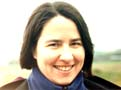
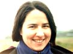

(For larger versions of each picture, click on the small image.)
Katherine, Amy, and Meg in the rain at New Year's in Fresno. Beth for some reason didn't want to come walking in the rain.


Beth and K in LA, and Meg and Bob in the rain.

Here are K's sisters and I playing "I Doubt It", a card game at which I have no chance against them because it involves keeping a straight face. They suspect I might have put down a few more cards than I claimed...


Meg and I juggling in Cupertino, and Katherine and Meg with a huge green M&M, after running Bay to Breakers in San Francisco. We had convinced Meg there wouldn't actually be any running, since it would be too crowded with 100,00 other people there, and then we accidently turned up 2 hours early and ended up running since those 100,000 people were mostly behind us (having gotten up at a decent hour.) That was about five years ago and I think Meg still is sore from that.
Bob with his folder, its trailer and plenty of camping gear at Point Reyes, and Meg and Amy in the snow atop Big Baldy peak in Sequioa. And this is what you find when you get your pictures back if you foolishly leave Meg alone in a room with your camera.
Katherine still looking patient after hearing me reminisce about college at Cornell, and Meg blasting homewards at Badger Pass. Katherine and Meg sitting on top of a brass pig in Seattle.


K biking in Quebec in her favorite T-shirt, a gang of heavily-laden bike campers about to head out at Point Reyes, and K and Doug at a little waterfall near Mount Charleston, Nevada.
Sean and Katherine with a huge prairie dog. The prairie dog is the one in the back. Sean at Devil's Tower, looking routes he'd like to do if only the temperature were above freezing. And Sean carrying more gear than could possibly go into any single pitch at Tollhouse.


{kind=link}
{kind=link}
{kind=link}
{kind=link}
{kind=link}